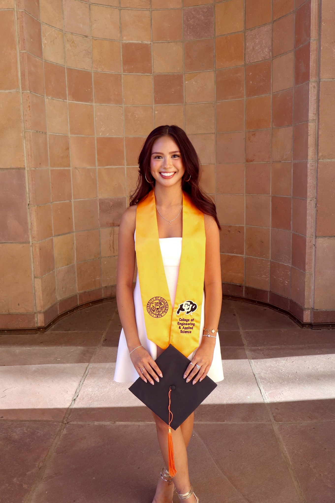

Hello,
I'm Alex.

I'm Alex Recana, a recent graduate from the University of Colorado Boulder with a Bachelor of Arts in Computer Science and a minor in Business. This site is a collection of the projects I've cared most about along the way.
What pulls me into software is the line between engineering and design — the places where how something is built and how it feels to use collapse into the same decision. A good interface is someone's whole experience of the software. That's what pointed me toward front-end development and UX work.
My classwork sits on both sides of that line. On the design side, I've built UI/UX prototypes in Figma, mapped user flows, and put what I learned into real web projects — most recently an interactive site about London football culture during the off-season, which I built with a partner while studying abroad in the UK. On the engineering side, I'm currently building a RISC-V processor in SystemVerilog, which has been the closest look I've had at what's actually happening under the abstractions I use every day. Zooming between those two scales — a user deciding where to click, and a CPU deciding which instruction to fetch next — has been one of the more fun parts of my degree.
During school I played on an intramural soccer team at CU Boulder and help organize practices with my teammates. In summer 2025 I studied abroad in London through a program focused on Defamiliarization — looking at familiar things from a fresh angle. That turned out to be surprisingly useful practice for design work, which is mostly about noticing what everyone else stopped noticing.
If any of that sounds interesting, I'd love to hear from you. Contact info is in the footer, my resume lives here, and you can see what I do for fun over on Life.
Education
- 2022—2026B.A. Computer Science · University of Colorado Boulder
- 2022—2026Minor in Business · Leeds School of Business · University of Colorado Boulder
- May—June 2025Study Abroad · London (Defamiliarization program)
Skills
- Front-end: HTML, CSS, JavaScript
- UI/UX design in Figma — wireframing, prototyping, user flows
- Version control & team collaboration with Git / GitHub
- Debugging and problem-solving in JavaScript and SystemVerilog
- Digital storytelling and research-driven web design
Relevant Coursework
- Human-Computer Interaction
- Cognitive Science
- Computer Organization
- Software Development
- Algorithms & Data Structures
- Introduction to Cybersecurity
Interests/Hobbies
- Intramural soccer at CU Boulder
- Travel — recently London
- Creativity/Desgin
- Skiing